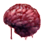
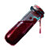
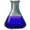
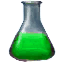

Мозг вампирского чудовища
Предметы / С врагов
Открыть в интерактивной вики →
| Вес | 1 |
|---|
Описание
В палатке командира Ордена вы можете извлечь из него
Для правильного извлечения крови выбираем крепкие щипцы, 3x

Кровь чудовища.Для правильного извлечения крови выбираем крепкие щипцы, 3x

Алхимический щелок и 1x
Кислота.